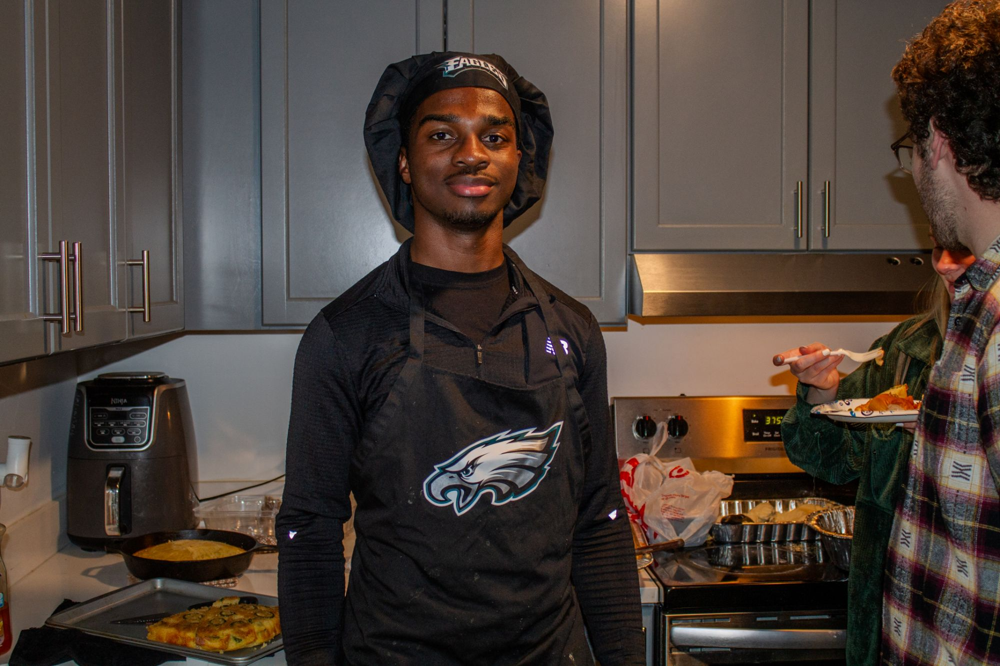

Home cooking, written down before I forget it.

I'm from Philadelphia, and I taught myself to cook in college — mostly out of necessity, then out of genuine love for it. Khadafi's Recipe Book started as a school project and turned into the place I keep the recipes I actually cook. Every recipe here is one I've made in my own kitchen, with the amounts and timings that worked for me.
The recipes lean toward big-flavor mains and a few desserts that are worth the extra time. Each one lists the ingredients, a rough difficulty, how long it takes start to finish, and step-by-step instructions.
Use the All Recipes page to search by name or ingredient, or filter by category to find something for tonight.